01
Air Hidup, Bukan Air Steril
Torch tidak hidup di air laboratorium. Dia butuh air kaya bakteri baik, fitoplankton, dan zooplankton — persis seperti dasar laut tropis di habitat aslinya.
Lelah lihat tentakel torch yang lemas, pendek, atau perlahan mati? Anda bukan reefer gagal — Anda hanya kekurangan prey drive mikroskopis di air tank Anda. Inilah sistem alami yang dipakai reefer juara.
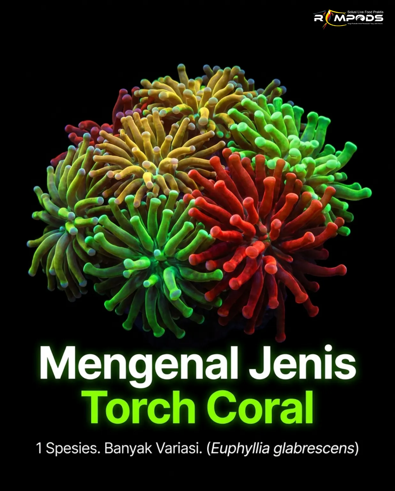
Tentakel panjang, gemuk, dan glow — hasil pakan hidup mikroskopis.
Tiga prinsip tak bisa dinegosiasi. Lewatkan satu, torch Anda akan kembali retraksi dalam 72 jam.
Torch tidak hidup di air laboratorium. Dia butuh air kaya bakteri baik, fitoplankton, dan zooplankton — persis seperti dasar laut tropis di habitat aslinya.
Tentakel torch dirancang menangkap partikel yang melintas pasif. Target feeding paksa = tentakel terbakar & retraksi permanen.
Torch makan setiap detik, bukan saat Anda buka tank. Copepods & rotifers hidup memberi nutrisi konstan tanpa polusi nitrat.
Lihat dengan jujur. Salah satu dari ini sedang membunuh coral Anda diam-diam.
RO/DI pekat + skimmer agresif menghilangkan semua plankton. Torch kelaparan walau ada NPS dosing.
Trace element overload, KH ayunan, dosis amino acid harian. Tentakel mulai mengkerut hari ke-5.
Suntik mysis dingin ke mulut. Tentakel terluka, infeksi bakteri, brown jelly disease.
Powerhead diarahkan ke kepala torch. Tentakel sobek, retraksi permanen, koloni rontok.
Copepods & rotifers Rimpods mengisi kembali kolom air seperti samudra alami. Torch makan otomatis 24 jam.
Tidak ada lonjakan PO4/NO3. Hanya protein hidup yang dicerna sempurna oleh tentakel.
Plankton mengikuti flow random tank. Tentakel menangkap dengan nyaman — seperti di reef tropis.
Live phytoplankton menjaga rotifers tetap hidup di tank, menciptakan rantai makanan mandiri.
Setiap tetes Rimpods adalah ribuan zooplankton hidup. Mereka menyebar pasif, mengikuti flow, dan diserap satu per satu oleh tentakel torch — memicu refleks tangkap yang membuat polip mekar maksimal.
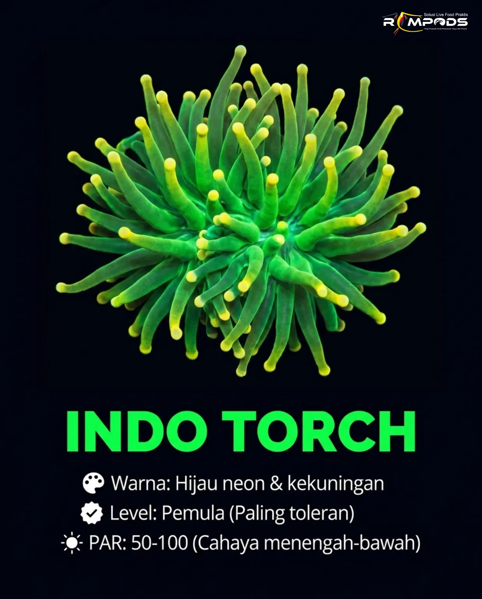
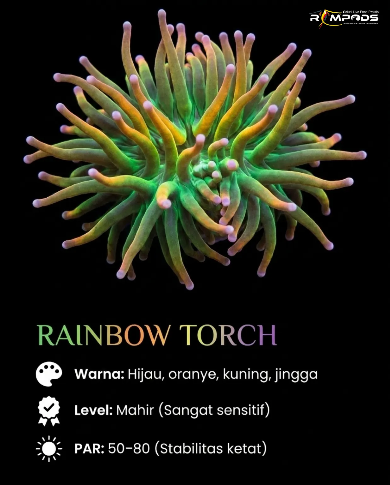
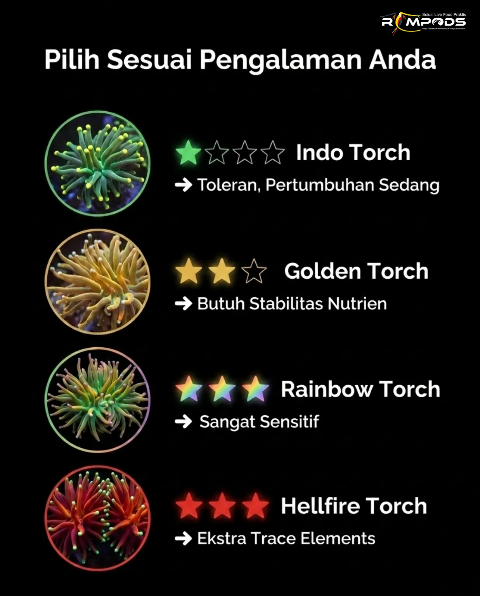
Semua koloni di bawah ini diberi pakan utama: Rimpods Live Copepods & Rotifers.
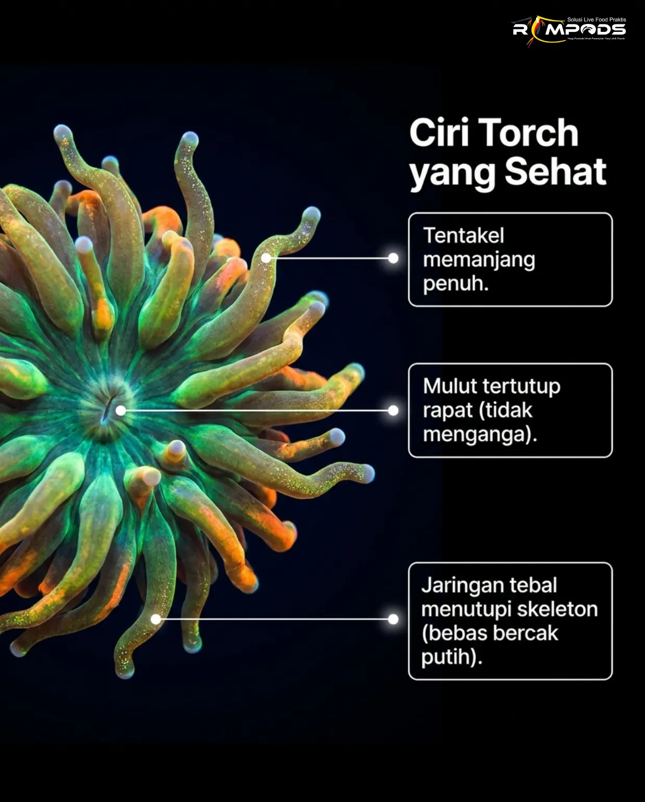
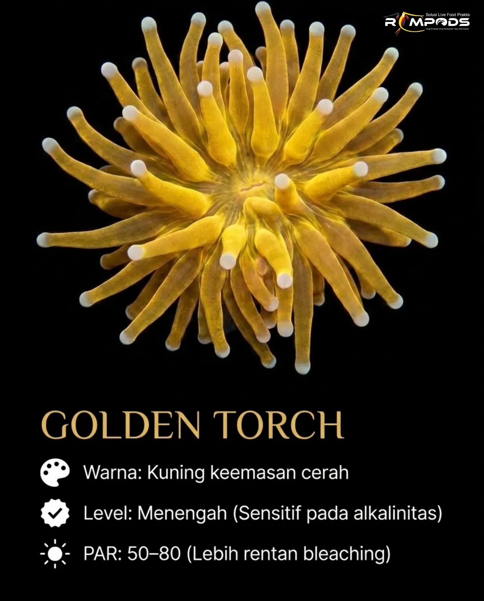
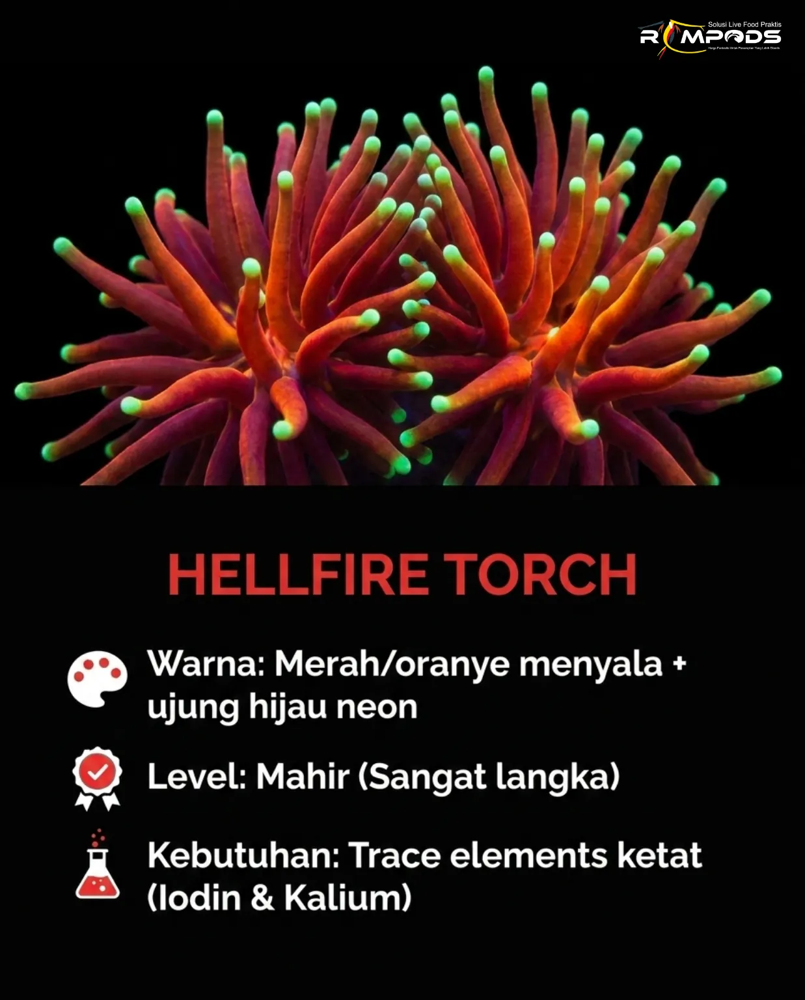
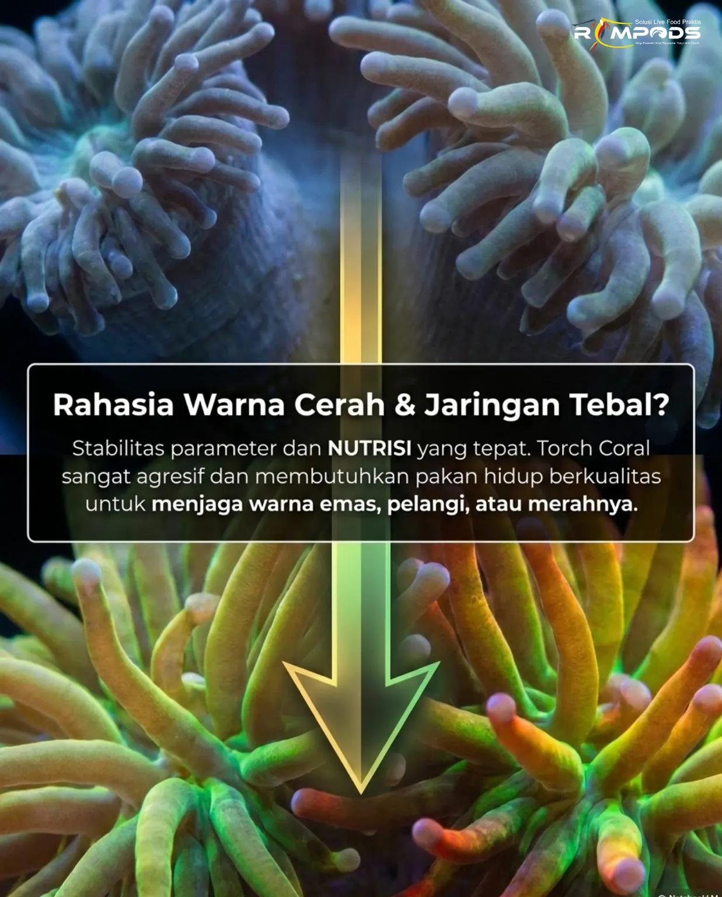
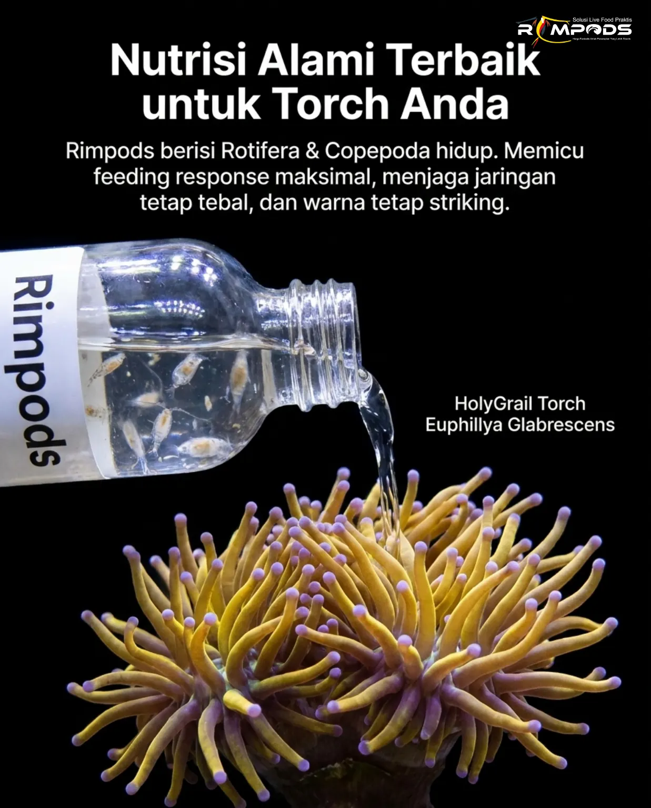
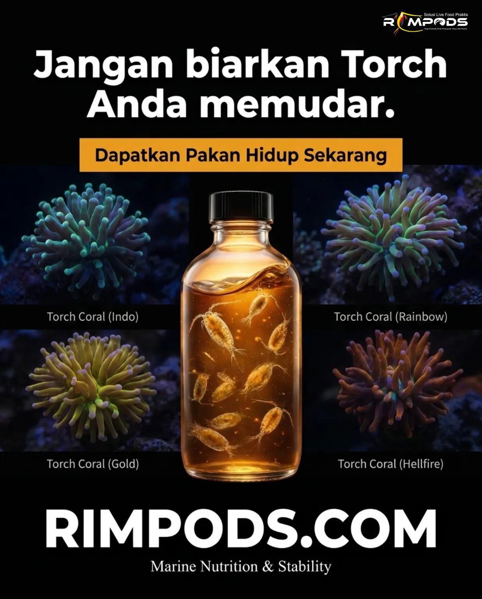
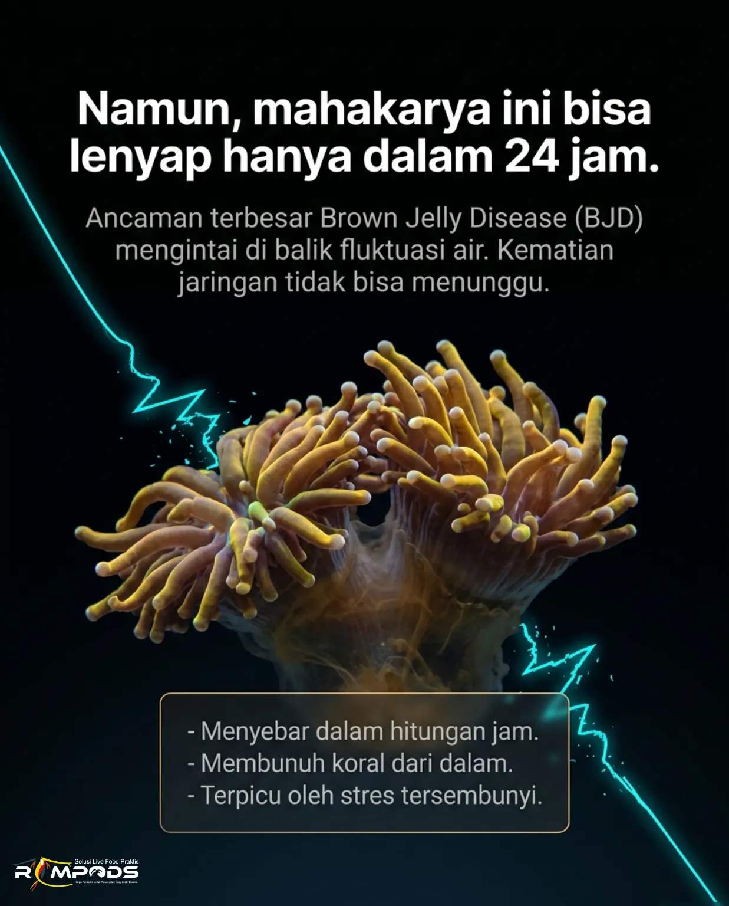
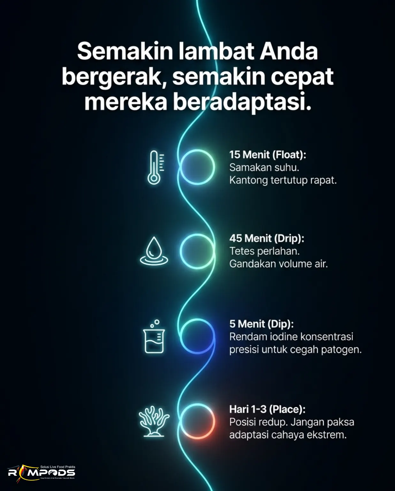
"Torch saya retraksi 2 minggu. Hari ke-3 pakai Rimpods, tentakel mulai memanjang. Hari ke-10 sudah panjang luar biasa."
"Gak perlu lagi target feed manual. Cukup teteskan Rimpods, semua coral termasuk torch jadi gemuk sendiri."
"Glow torch saya naik level. Tetangga reefer pada nanya pakai LED apa — padahal cuma rajin dosing Rimpods."
Paket 2 liter — Live Copepods & Rotifers, plus bonus protokol dosing 30 hari untuk mekar maksimal.
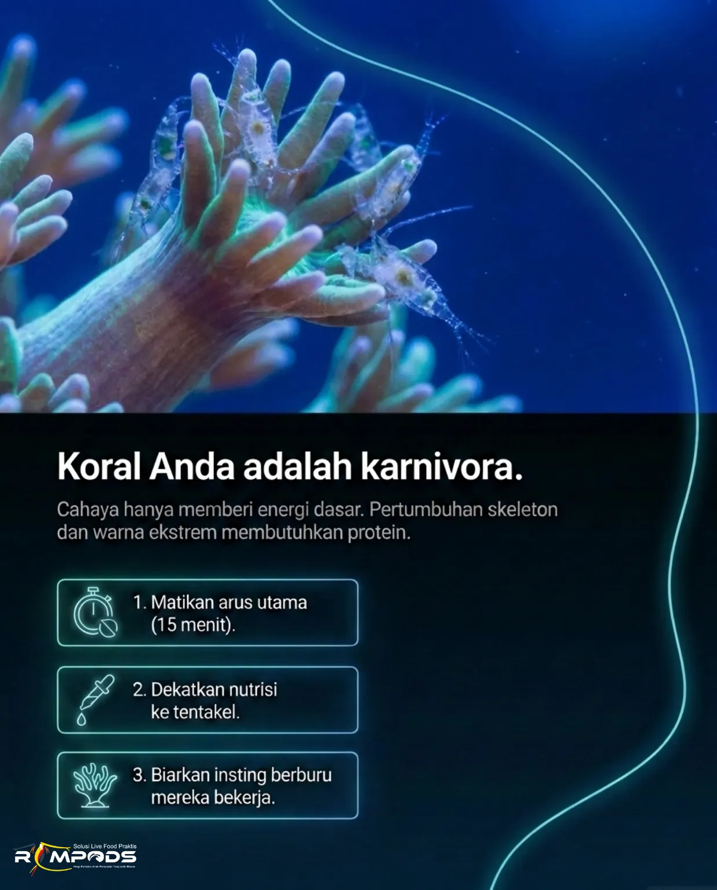
Harga normal Rp 160.000 — hemat Rp 30.001 hari ini.
Checkout Sekarang →Klik = langsung ke checkout rimpods.com. Stok harian terbatas (live shipment).